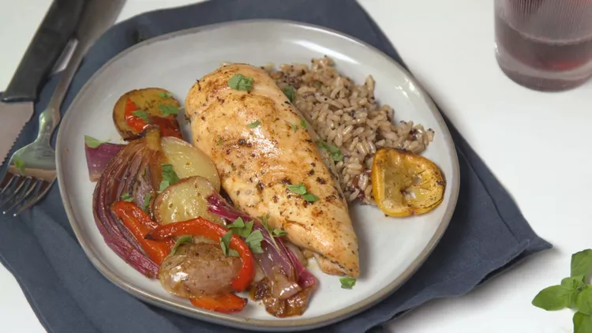

Home
Lemony Mediterranean Chicken

Description
This lemony Mediterranean-style chicken is one of my favorite family recipes. I remember my mom would always make this when people would come over.
Ingredients
4 skinless, boneless chicken breast halves
¼ cup olive oil
4 large cloves garlic, pressed
2 tablespoons fresh lemon juice
2 tablespoons fresh lemon zest
1 tablespoon dried oregano
¾ teaspoon salt
½ teaspoon coarsely ground black pepper
8 baby red potatoes, halved
1 red bell pepper, cut into 1-inch wide strips
1 red onion, cut into 1-inch wedges
1 lemon, thinly sliced
Steps
- Preheat the oven to 400 degrees F (200 degrees C). Place chicken breasts into a 9x13-inch baking dish.
- Whisk olive oil, garlic, lemon juice, lemon zest, oregano, salt, and pepper together in a bowl. Brush some of the mixture onto chicken.
- Place potatoes, bell pepper, onion, and lemon slices into a bowl; pour in remaining lemon juice mixture and toss to coat. Arrange vegetables and lemon slices around chicken in the baking dish.
- Bake in the preheated oven for 30 minutes. Brush chicken and vegetables with the pan drippings. Continue to bake until chicken is browned, the juices run clear, and an instant-read meat thermometer inserted into the thickest part of a breast reads at least 165 degrees F (74 degrees C), about 30 more minutes.